Built because
the county needed it.
Twenty-six years and counting: five stations, six units, and a mission that hasn't changed since the first unit went in service.
Why we exist
To provide the highest level of exemplary pre-hospital clinical care to the residents and guests of Greene County, in a safe and professional manner, through a team of knowledgeable, skillful and caring certified EMS providers.
From a patchwork to a system
In the late 1990s, emergency medical care in Greene County was a patchwork of volunteer rescue squads and contracted commercial paramedic ambulances. Volunteerism was declining and the private services were unreliable. Something more needed to be done.
Greene County Emergency Medical Systems, Inc. — "Greene EMS," or "Greene County Paramedics" — was formed as a 501(c)(3) not-for-profit with the support of the Greene County Rural Health Network, to provide high-quality, reliable advanced life support to the residents and visitors of the county.
Two paramedic units, covering the mountaintop and the Town of Cairo, went in service on August 1, 2000. They answered 550 calls that first year. A third unit and the Town of Catskill followed in 2001; by 2004 every township had signed on to the fly car system and four paramedics were operating around the clock. As call volume grew, the part-time administrator became a full-time Chief of Operations in 2007. In April 2020, Medic 8 went in service at Prattsville Hose Company as the fifth full-time unit, serving the most rural part of the county, where hospital transports routinely run an hour or more.
Today, Greene EMS fields some of the most highly trained, best equipped and technologically advanced paramedics in New York State.
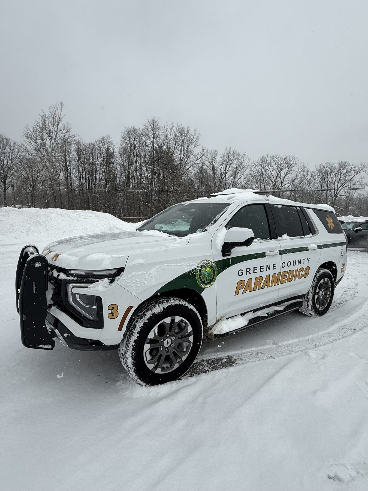
The same job, better tools every decade
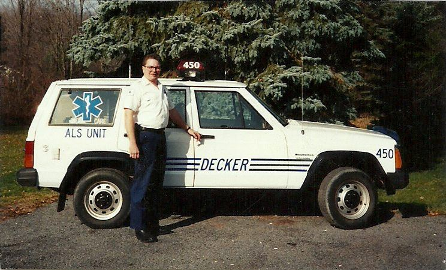
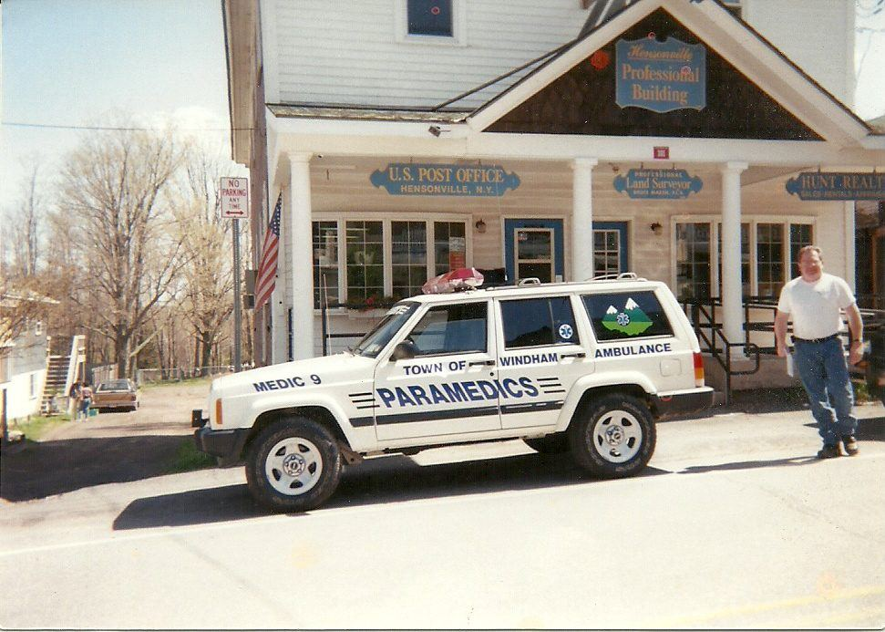
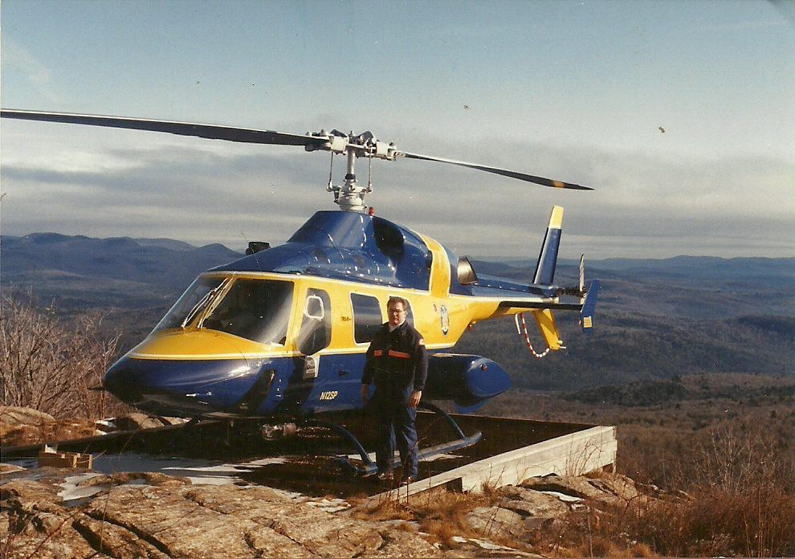
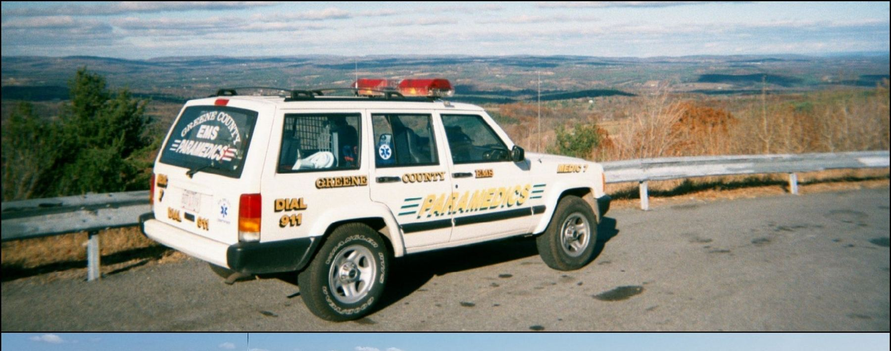
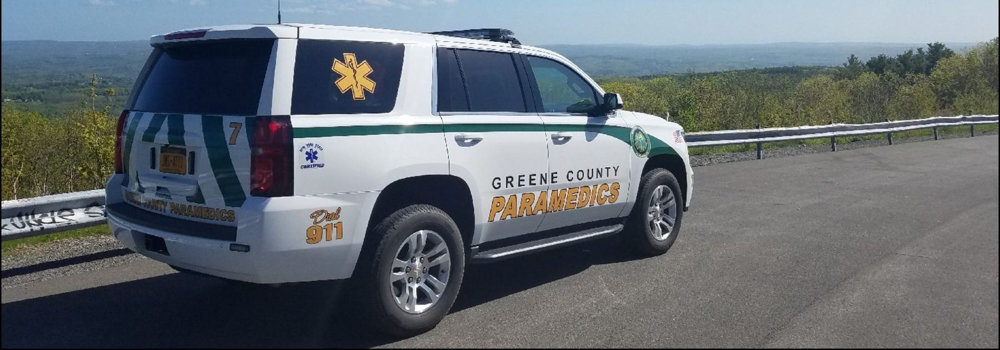
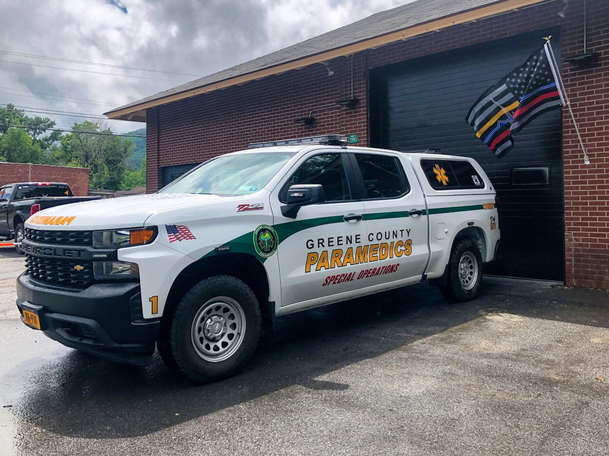
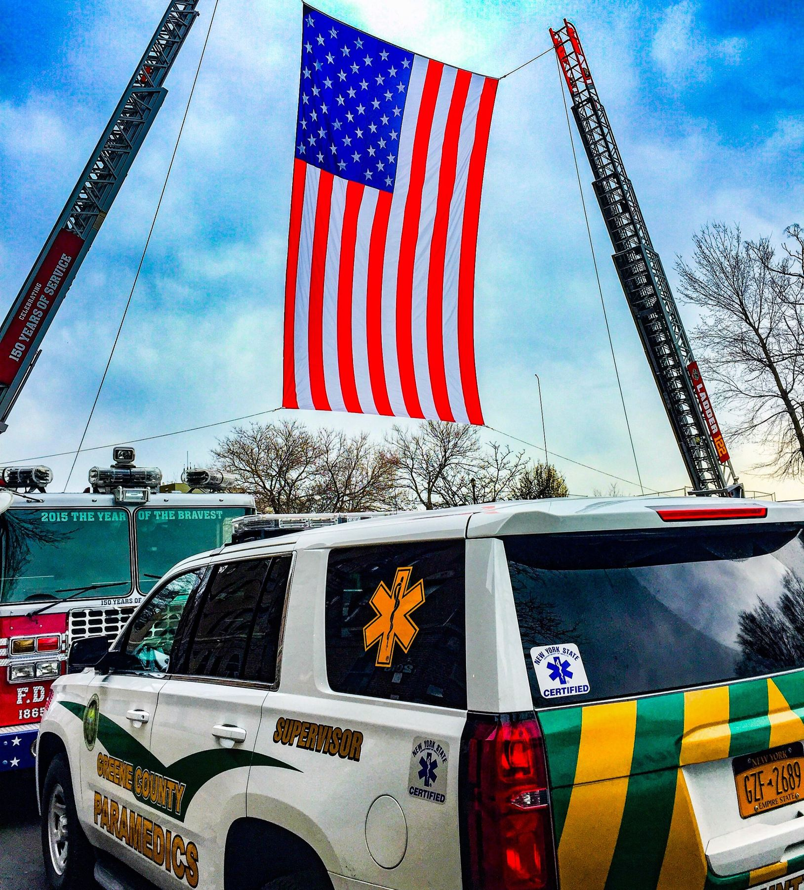
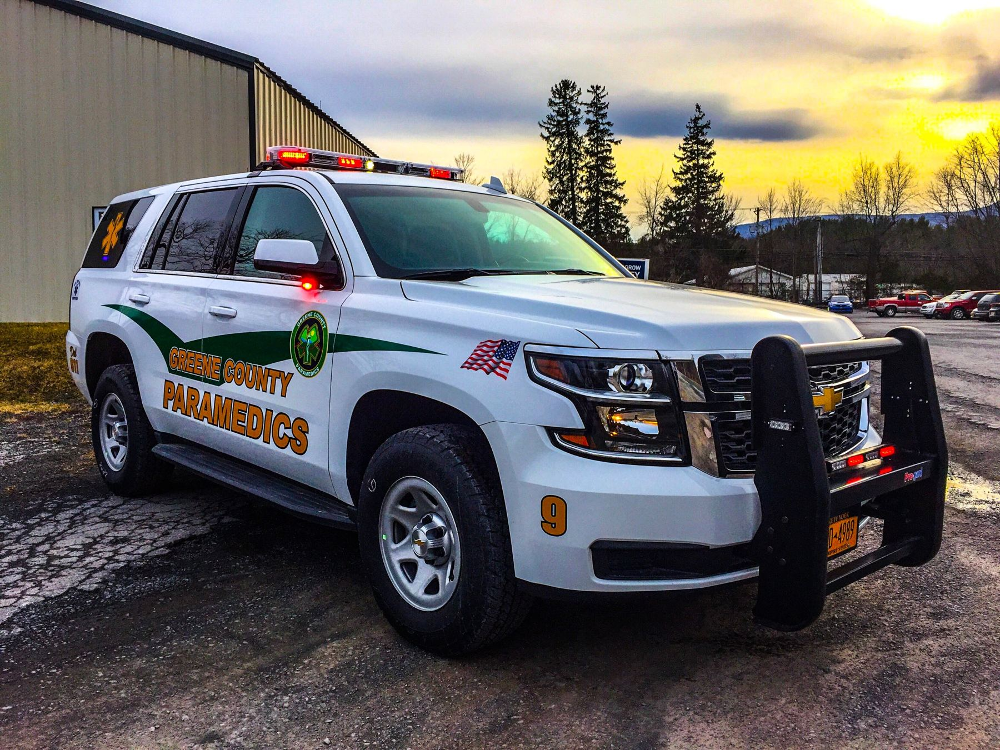
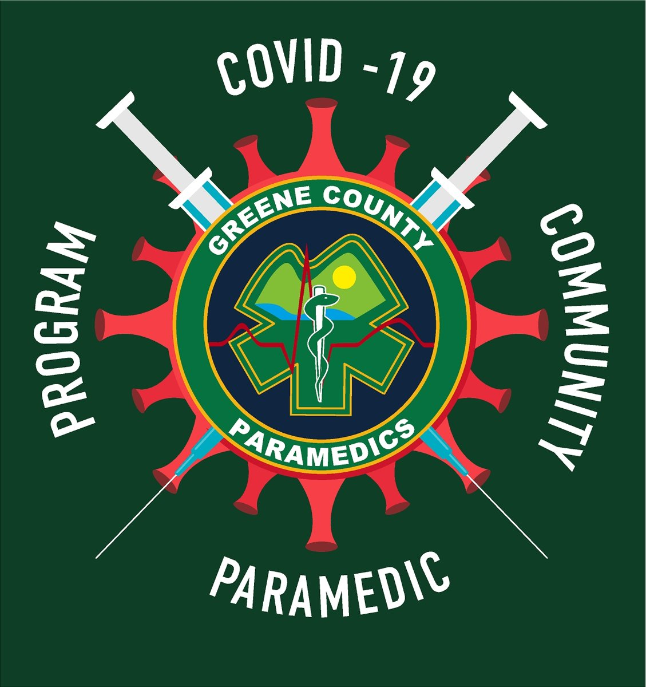
2020 – 2021A different kind of call
During the pandemic our paramedics stepped out of the fly cars and into gowns and face shields, staffing Greene County's COVID-19 vaccination PODs and vaccinating residents in nursing homes and community sites across the county. It was community paramedicine before we had a name for it — and the emblem on the left is the one we wore for it.
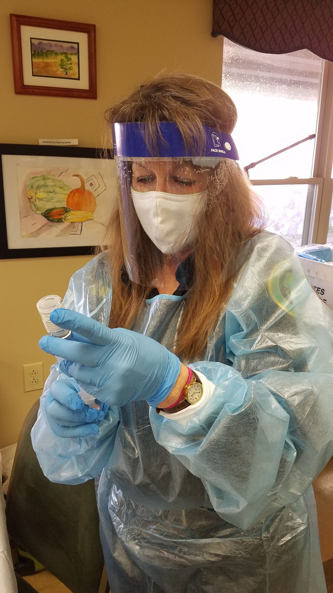
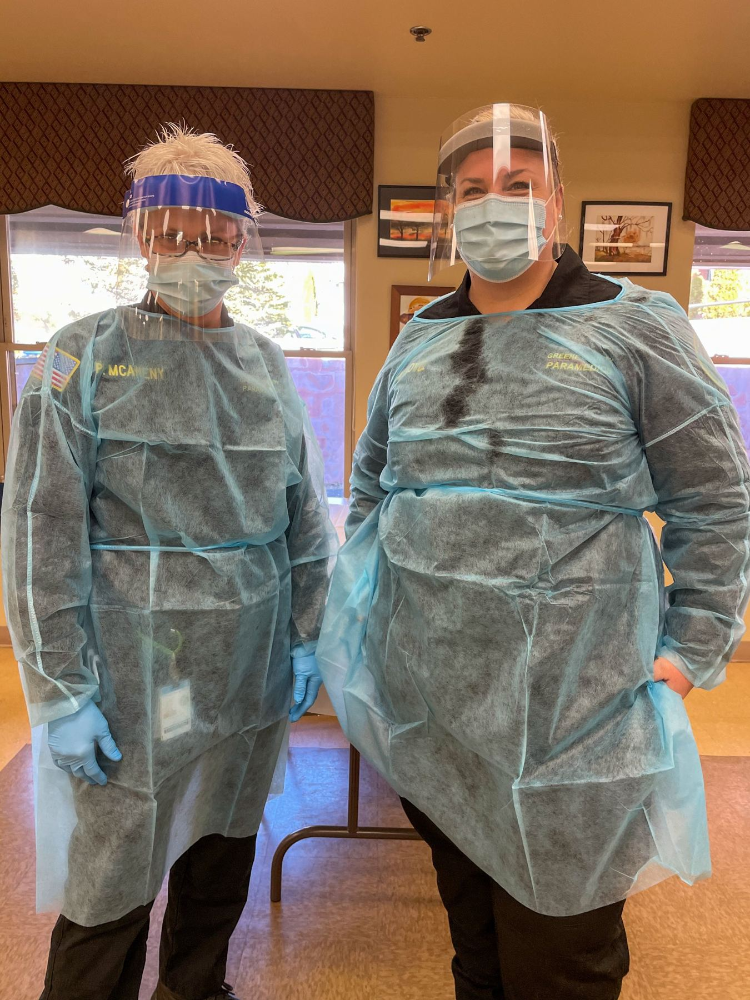
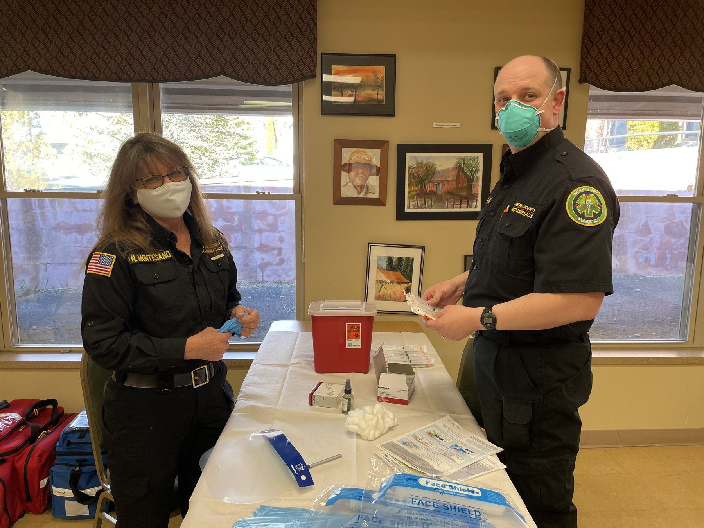
The people running it
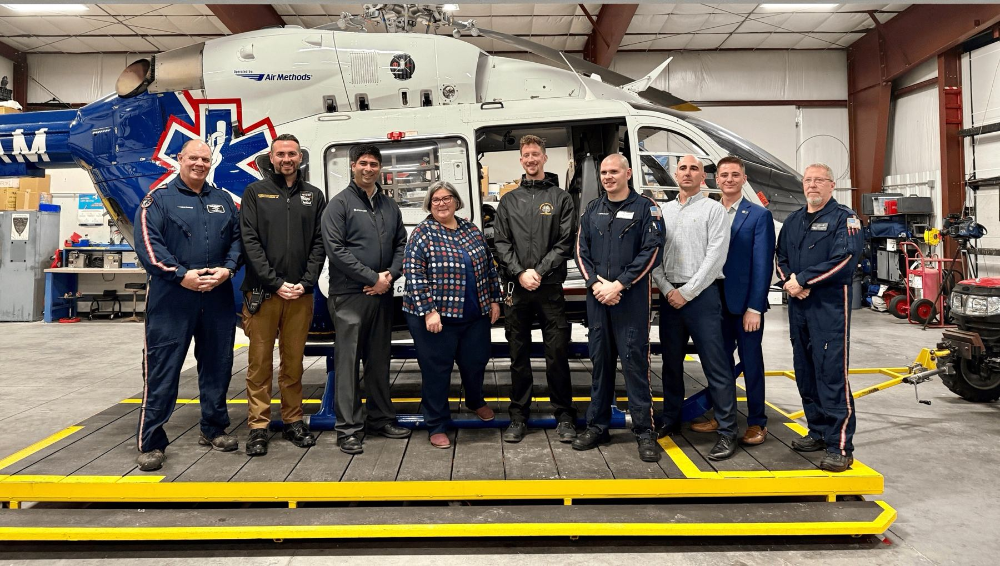
Chief Near (center right) pictured with a New York State Assemblywoman, physicians, and LifeNet staff, discussing prehospital blood in New York State.
93A County Route 84, Cairo, NY 12413 · (518) 622-8092 · Chief@greene-ems.com